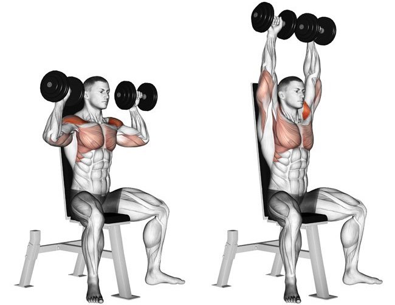
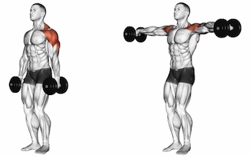
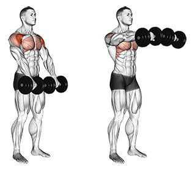
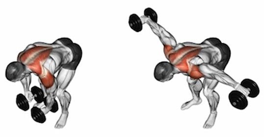

Tlaky s jednoručkami
Výchozí poloha: sedíme na lavici, opěrátko cca 80 stupňů aby se o něj dalo opřít, lopatky stažené dozadu a hrudník vypnutý. Nohy a celé tělo jsou pevné. Držíme činky tak, aby lokty svíraly pravý úhel (90 stupňů) nebo menší.
Provedení: Nádech a s výdechem tlačíme nahoru. Nahoře ruce nepropínáme, aby ramena byla pořád v napětí.
Upažování s jednoručkami
Výchozí poloha: Mírný stoj rozkročný a lehký předklon v pase. Celá tělo je pevní a ruce drží činky podél těla. Dlaně směřují k tělu a jsou lehce pokrčena v loktech.
Provedení: Nadechneme se a plynule zvedáme ruce nahoru tak, aby lokty neklesaly pod úroveň zápěstí. Finální poloha končí na úrovni, kdy jsou paže rovnoběžně se zemí. S výdechem pouštíme dolů.
Předpažování
Výchozí poloha: Ve stoji, stoj mírně rozkročný, držíme činky v napnutých pažích podél těla pod kyčelním kloubem. Cvik můžeme provádět i vsedě na lavičce. Tuto variantu si můžeme ztížit tím způsobem, že trup nebude kolmo k podlaze, ale bude položen na mírně sklopené lavičce. Tím budou svaly ramen nuceny pracovat intenzivněji hned od začátku pohybu.
Provedení: Kontrakcí předních hlav deltového svalu zvedáme činky při napnutých pažích vzhůru. Pohyb vychází pouze z pohybu v ramenním kloubu. Pohyb končíme s osou na úrovni očí před tělem. Výdech. S nádechem vracíme zpět do původní polohy.
Upažování v předklonu
Výchozí poloha: V předklonu nebo v sedu na lavičce, paže drží činky a jsou spuštěny k zemi.
Provedení: Kontrakcí zadních hlav deltového svalu zvedáme činky při napnutých pažích vzhůru do boku. Pohyb vychází pouze z pohybu v ramenním kloubu a z pohybu lopatky. Pohyb končíme s činkami na úrovni hlavy. Současně s tím vydechujeme. S nádechem vracíme zpět do původní polohy s činkami u země.
.